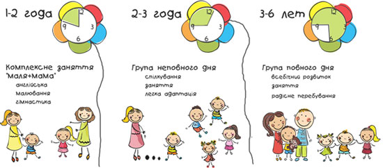

О нас
“Kinderland“ пропонує індивідуальний підхід до кожної дитини, де групи не більш 12 дітей та 2 педагоги.
Головні предмети:
- читання та розвиток мовлення;
- математика та логіка;
- у світі музики;
- образотворче мистецтво;
- фізичне виховання та гімнастика;
- хореографія;
- акторське мистецтво на базі російських та українських казок (спектаклі, сценки, мюзікли );
- іноземна мова ( англійська, французька, німецька, у старших групах по бажанню );
- Я і Біблія;
- вокал (логопедичний вокал) ейдетика (розвиток уваги та пам’яті)
“Kinderland“ виконує роботу дошкільної та позашкільної освітньої діяльності , в якому забезпечується фізичний, розумовий і психологічний розвиток, корекція фізичного та розумового розвитку,загальний розвиток, виховання дітей від 1-го року. Використовується базова програма Міністерства освіти і науки « Я у світі »та використовує методики різних світових авторів.
Ліцензія Серія АГ №576675.
Головним завданням є:
- надання гідної освіти;
- всебічний розвиток дитини;
- розкриття її потенціалу;
- виховання трьома мовами ( українська, англійська та російська);
